| 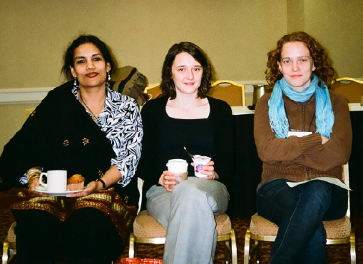
Deepamwita Jasgupta, Isabelle Drouet, Catherine Stinson |
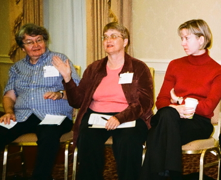
Nancy Hall, Lindley Darden, Andrea Woody |
| 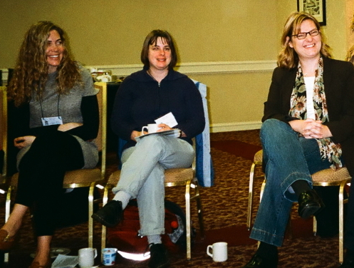
Moira Howes, Doreen Fraser, Carla Fehr |
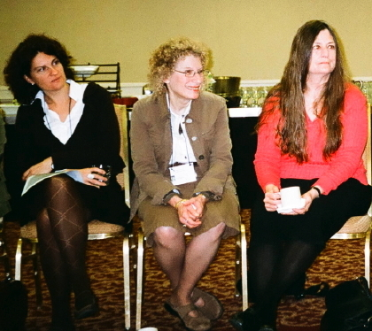
Maria Rentetzi, Janet Kourany, Kathleen Okruhlik |
| 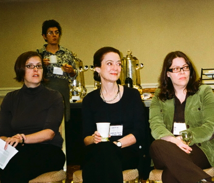
Evelyn Brister, Kristin Shrader-Frechette, Kristina Rolin |
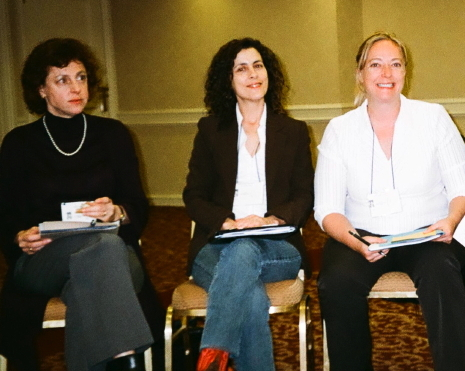
Miriam Solomon, Inmaculada de Melo-Martin, Kristen Intemann |
| 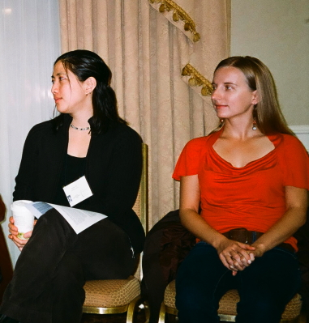
Audrey Yap, Monika Piotrowska |
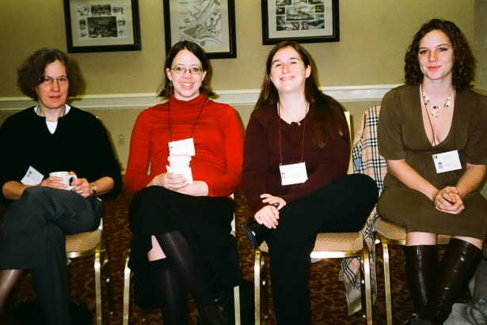
Susan Hawthorne, Holly Andersen, Kathryn Plaisance, Julia Bursten |
| 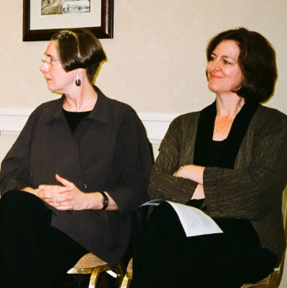
Alison Wylie, Nancy Tuana |
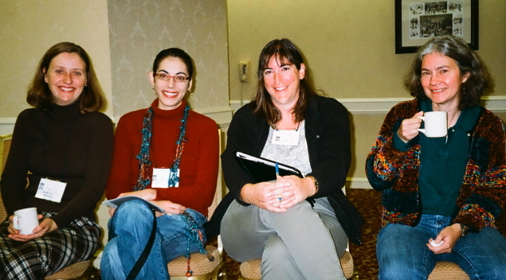
Katherine Brading, Tania Lombrozo, Roberta Millstein, Lisa Gannett |
| 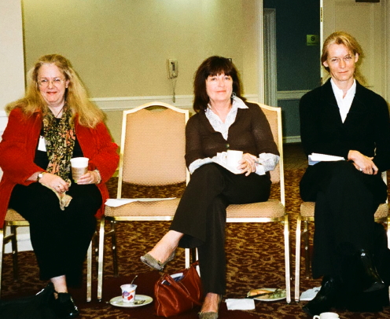
Elisabeth Lloyd, Sharon Crasnow, Mieke Boon |
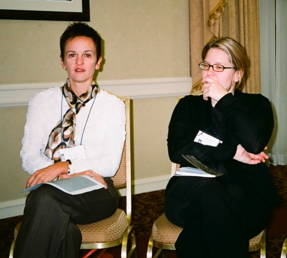
Stephanie Ruphy, Dana Tulodziecki |
| 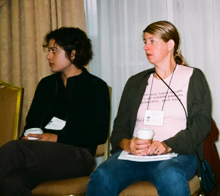
Angela Potochnik, Janet Stemwedel |
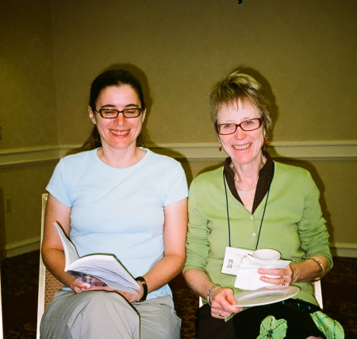
Laura Ruetsche, Nancy Cartwright |
Photo credit: Sharyn Clough